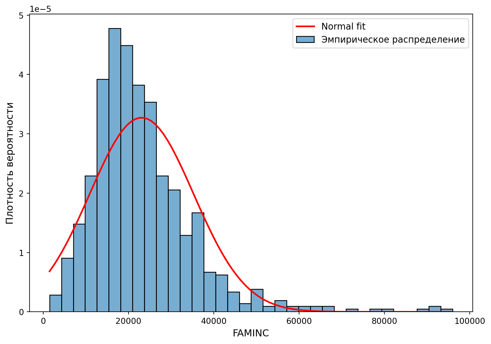
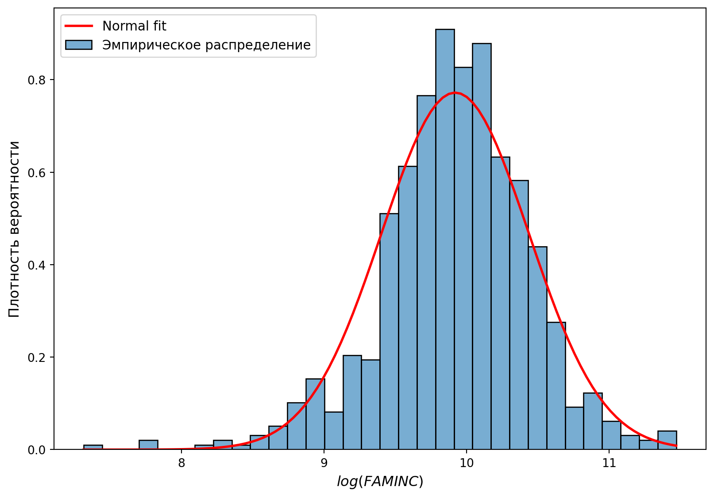
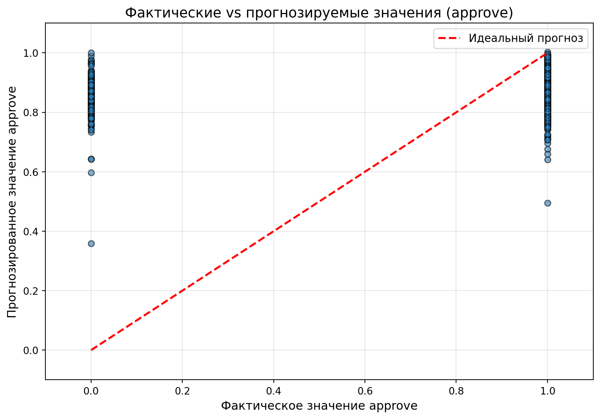
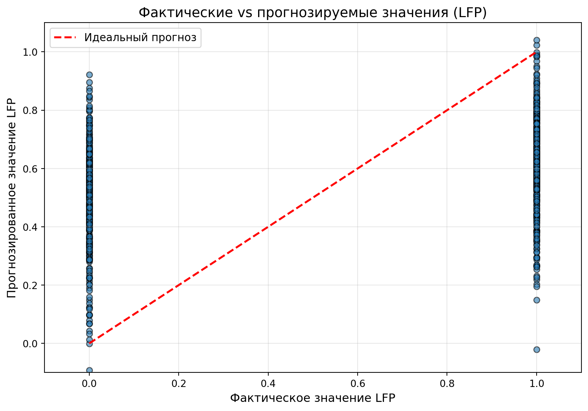

Задачи по Эконометрике-2: LPM-модель
1 Подгонка модели
1.1 approve equation #1
Для датасета loanapp рассмотрим регрессию approve на mortno, unem, dep, male, married, yjob, self
Спецификация:
\[ \begin{equation} approve=\beta_0 + \beta_1 mortno+\beta_2 unem + \beta_3 dep + \beta_4 male + \beta_5 married + \beta_6 yjob + \beta_7 self + u \end{equation} \]
Альтернативная спецификация:
\[ \begin{equation} P(approve=1)=\beta_0+\beta_1mortno+\beta_2unem+\beta_3dep+\beta_4male+\beta_5married+\beta_6yjob+\beta_7self \end{equation} \]
Оцените модель на данных и укажите коэффициенты подогнанной модели. Ответ округлите до 3-х десятичных знаков.
Ответ:
| Переменная | Оценка (OLS) | Оценка (HC3) |
|---|---|---|
| Intercept | 0.864 | 0.864 |
| mortno | 0.073 | 0.073 |
| unem | -0.006 | -0.006 |
| dep | -0.018 | -0.018 |
| male | 0.002 | 0.002 |
| married | 0.046 | 0.046 |
| yjob | -0.001 | -0.001 |
| self | -0.036 | -0.036 |
Дайте интерпретацию коэффициентам модели.
1.2 approve equation #2
Для датасета loanapp рассмотрим регрессию approve на appinc, I(appinc ** 2), mortno, unem, dep, male, married, yjob, self
Спецификация:
\[ \begin{equation} approve=\beta_0 + \beta_1 appinc + \beta_2 appinc^{2} + \beta_3 mortno+\beta_4 unem + \beta_5 dep + \beta_6 male + \beta_7 married + \beta_8 yjob + \beta_9 self + u \end{equation} \]
Альтернативная спецификация:
\[ \begin{equation} P(approve=1)=\beta_0 + \beta_1 appinc + \beta_2 appinc^{2} + \beta_3 mortno+\beta_4 unem + \beta_5 dep + \beta_6 male + \beta_7 married + \beta_8 yjob + \beta_9 self \end{equation} \]
Оцените модель на данных и укажите коэффициенты подогнанной модели. Ответ округлите до 3-х десятичных знаков.
Ответ:
| Переменная | Оценка (OLS) | Оценка (HC3) |
|---|---|---|
| Intercept | 0.842 | 0.842 |
| appinc | 0.001 | 0.001 |
| I(appinc ** 2) | -0 | -0 |
| mortno | 0.066 | 0.066 |
| unem | -0.006 | -0.006 |
| dep | -0.017 | -0.017 |
| male | -0.003 | -0.003 |
| married | 0.043 | 0.043 |
| yjob | -0.001 | -0.001 |
| self | -0.04 | -0.04 |
Дайте интерпретацию коэффициентам модели.
1.3 labour force equation #1
Для датасета TableF5-1 рассмотрим регрессию LFP на WA, I(WA ** 2), WE, KL6, K618, CIT, UN, np.log(FAMINC)
Спецификация:
\[ \begin{equation} LFP=\beta_0+\beta_1WA+\beta_2WA^2+\beta_3WE+\beta_4KL6+\beta_5K618+\beta_6CIT+\beta_7UN+\beta_8\log(FAMINC)+u \end{equation} \]
Альтернативная спецификация:
\[ \begin{equation} P(LFP=1)=\beta_0+\beta_1WA+\beta_2WA^2+\beta_3WE+\beta_4KL6+\beta_5K618+\beta_6CIT+\beta_7UN+\beta_8\log(FAMINC) \end{equation} \]
Оцените модель на данных и укажите коэффициенты подогнанной модели. Ответ округлите до 3-х десятичных знаков.
Ответ:
| Переменная | Оценка (OLS) | Оценка (HC3) |
|---|---|---|
| Intercept | -0.321 | -0.321 |
| WA | 0.008 | 0.008 |
| I(WA ** 2) | -0 | -0 |
| WE | 0.038 | 0.038 |
| KL6 | -0.296 | -0.296 |
| K618 | -0.021 | -0.021 |
| CIT | -0.048 | -0.048 |
| UN | -0.004 | -0.004 |
| np.log(FAMINC) | 0.072 | 0.072 |
Дайте интерпретацию коэффициентам модели.
1.4 labour force equation #2
Для датасета TableF5-1 рассмотрим регрессию LFP на WA, WE, CIT, UN, np.log(FAMINC)
Спецификация:
\[ \begin{equation} LFP = \beta_0 + \beta_1 WA + \beta_2 WE + \beta_3 CIT + \beta_4 CIT+\beta_5 UN + \beta_6 \log(FAMINC)+u \end{equation} \]
Альтернативная спецификация:
\[ \begin{equation} P(LFP=1) = \beta_0 + \beta_1 WA + \beta_2 WE + \beta_3 CIT + \beta_4 CIT+\beta_5 UN + \beta_6 \log(FAMINC) \end{equation} \]
Оцените модель на данных и укажите коэффициенты подогнанной модели. Ответ округлите до 3-х десятичных знаков.
Ответ:
| Переменная | Оценка (OLS) | Оценка (HC3) |
|---|---|---|
| Intercept | -0.536 | -0.536 |
| WA | -0.004 | -0.004 |
| WE | 0.033 | 0.033 |
| CIT | -0.048 | -0.048 |
| UN | -0.005 | -0.005 |
| np.log(FAMINC) | 0.094 | 0.094 |
Дайте интерпретацию коэффициентам модели.
1.5 Замечание: почему log(FAMINC)
Нарисуем гистограмму \(\textrm{FAMINC}\) с наложенной кривой нормального распределения
Нарисуем гистограмму \(\log(\textrm{FAMINC})\) с наложенной кривой нормального распределения

2 t-тест
2.1 approve equation #1
Для датасета loanapp рассмотрим регрессию approve на mortno, unem, dep, male, married, yjob, self
Оцените модель на данных и укажите (робастные) коэффициенты подогнанной модели. Ответ округлите до 3-х десятичных знаков.
Ответ:
| Переменная | Оценка (HC3) |
|---|---|
| Intercept | 0.864 |
| mortno | 0.073 |
| unem | -0.006 |
| dep | -0.018 |
| male | 0.002 |
| married | 0.046 |
| yjob | -0.001 |
| self | -0.036 |
Модель была подогнана по 1971 наблюдению. Уровень значимости 1%
Вычислите критическое значения для \(t\)-теста. Ответ округлите до 3-х десятичных знаков.
УведомлениеКритическое значение
\(t_{crit} = 2.578\)
Укажите результаты робастного и неробастного \(t\)-теста. Ответ округлите до 3-х десятичных знаков.
Результаты \(t\)-теста для коэффициентов (неробастные стандартные ошибки, s.e.)
| Coef. | Std.Err. | t-value | p-value | Signif. | |
|---|---|---|---|---|---|
| Intercept | 0.864 | 0.022 | 39.444 | 0 | |
| mortno | 0.073 | 0.016 | 4.578 | 0 | *** |
| unem | -0.006 | 0.003 | -1.858 | 0.063 | * |
| dep | -0.018 | 0.007 | -2.57 | 0.01 | ** |
| male | 0.002 | 0.02 | 0.094 | 0.925 | |
| married | 0.046 | 0.018 | 2.604 | 0.009 | *** |
| yjob | -0.001 | 0.007 | -0.099 | 0.921 | |
| self | -0.036 | 0.022 | -1.621 | 0.105 |
Signif. codes: *** \(p<0.01\), ** \(p<0.05\), * \(p<0.1\)
Какие коэффициенты значимы?
УведомлениеКоэффициенты, значимые на уровне 1% (по классическим стандартным ошибкам)
mortno, married
Результаты \(t\)-теста для коэффициентов (робастные стандартные ошибки, HC3-s.e.):
| Coef. | Std.Err. | t-value | p-value | Signif. | |
|---|---|---|---|---|---|
| Intercept | 0.864 | 0.023 | 37.135 | 0 | |
| mortno | 0.073 | 0.015 | 4.886 | 0 | *** |
| unem | -0.006 | 0.004 | -1.605 | 0.108 | |
| dep | -0.018 | 0.008 | -2.429 | 0.015 | ** |
| male | 0.002 | 0.021 | 0.089 | 0.929 | |
| married | 0.046 | 0.019 | 2.458 | 0.014 | ** |
| yjob | -0.001 | 0.006 | -0.107 | 0.915 | |
| self | -0.036 | 0.025 | -1.464 | 0.143 |
Signif. codes: *** \(p<0.01\), ** \(p<0.05\), * \(p<0.1\)
Какие коэффициенты значимы?
УведомлениеКоэффициенты, значимые на уровне 1% (по робастным стандартным ошибкам HC3)
mortno
УведомлениеРасшифровка кодов статистической значимости (Signif. codes)
В таблицах регрессионного анализа звездочками традиционно обозначается \(p\)-значение (p-value) для каждого коэффициента. Чем меньше \(p\)-значение, тем сильнее статистические доказательства против нулевой гипотезы (\(H_0\)), согласно которой данный фактор не влияет на зависимую переменную (истинный коэффициент равен нулю).
***: \(p < 0.01\) (от 0 до 0.01) — высокая значимость. Нулевая гипотеза отвергается на уровне значимости 1%.**: \(0.01 \le p < 0.05\) — стандартная значимость. Коэффициент значим на 5% уровне. Это самый распространенный порог для подтверждения гипотез в большинстве исследований.*: \(0.05 \le p < 0.1\) — маргинальная (слабая) значимость. Коэффициент значим лишь на 10% уровне. В строгих моделях предиктор признают незначимым, но иногда интерпретируют как «статистическую тенденцию».(пустое место) : \(p \ge 0.1\) (от 0.1 до 1) — статистически не значимо. У нас нет достаточных оснований утверждать, что переменная оказывает влияние на результат.
2.2 approve equation #2
Для датасета loanapp рассмотрим регрессию approve на appinc, I(appinc ** 2), mortno, unem, dep, male, married, yjob, self
Оцените модель на данных и укажите (робастные) коэффициенты подогнанной модели. Ответ округлите до 3-х десятичных знаков.
Ответ:
| Переменная | Оценка (HC3) |
|---|---|
| Intercept | 0.842 |
| appinc | 0.001 |
| I(appinc ** 2) | -0 |
| mortno | 0.066 |
| unem | -0.006 |
| dep | -0.017 |
| male | -0.003 |
| married | 0.043 |
| yjob | -0.001 |
| self | -0.04 |
Модель была подогнана по 1971 наблюдению. Уровень значимости 1%
Вычислите критическое значения для \(t\)-теста. Ответ округлите до 3-х десятичных знаков.
Ответ:
УведомлениеКритическое значение
\(t_{crit} = 2.578\)
Укажите результаты робастного и неробастного \(t\)-теста. Ответ округлите до 3-х десятичных знаков.
Результаты \(t\)-теста для коэффициентов (неробастные стандартные ошибки, s.e.)
| Coef. | Std.Err. | t-value | p-value | Signif. | |
|---|---|---|---|---|---|
| Intercept | 0.842 | 0.025 | 33.3 | 0 | |
| appinc | 0.001 | 0 | 2.082 | 0.037 | ** |
| I(appinc ** 2) | -0 | 0 | -2.803 | 0.005 | *** |
| mortno | 0.066 | 0.016 | 4.029 | 0 | *** |
| unem | -0.006 | 0.003 | -1.757 | 0.079 | * |
| dep | -0.017 | 0.007 | -2.374 | 0.018 | ** |
| male | -0.003 | 0.02 | -0.142 | 0.887 | |
| married | 0.043 | 0.018 | 2.449 | 0.014 | ** |
| yjob | -0.001 | 0.007 | -0.132 | 0.895 | |
| self | -0.04 | 0.023 | -1.786 | 0.074 | * |
Signif. codes: *** \(p<0.01\), ** \(p<0.05\), * \(p<0.1\)
Какие коэффициенты значимы?
УведомлениеКоэффициенты, значимые на уровне 1% (по классическим стандартным ошибкам)
I(appinc ** 2), mortno
Результаты \(t\)-теста для коэффициентов (робастные стандартные ошибки, HC3-s.e.):
| Coef. | Std.Err. | t-value | p-value | Signif. | |
|---|---|---|---|---|---|
| Intercept | 0.842 | 0.027 | 31.003 | 0 | |
| appinc | 0.001 | 0 | 1.958 | 0.05 | * |
| I(appinc ** 2) | -0 | 0 | -2.374 | 0.018 | ** |
| mortno | 0.066 | 0.015 | 4.321 | 0 | *** |
| unem | -0.006 | 0.004 | -1.515 | 0.13 | |
| dep | -0.017 | 0.007 | -2.28 | 0.023 | ** |
| male | -0.003 | 0.021 | -0.135 | 0.893 | |
| married | 0.043 | 0.019 | 2.309 | 0.021 | ** |
| yjob | -0.001 | 0.006 | -0.14 | 0.889 | |
| self | -0.04 | 0.025 | -1.602 | 0.109 |
Signif. codes: *** \(p<0.01\), ** \(p<0.05\), * \(p<0.1\)
Какие коэффициенты значимы?
УведомлениеКоэффициенты, значимые на уровне 1% (по робастным стандартным ошибкам HC3)
mortno
2.3 labour force equation #1
Для датасета TableF5-1 рассмотрим регрессию LFP на WA, I(WA ** 2), WE, KL6, K618, CIT, UN, np.log(FAMINC)
Оцените модель на данных и укажите (робастные) коэффициенты подогнанной модели. Ответ округлите до 3-х десятичных знаков.
Ответ:
| Переменная | Оценка (HC3) |
|---|---|
| Intercept | -0.321 |
| WA | 0.008 |
| I(WA ** 2) | -0 |
| WE | 0.038 |
| KL6 | -0.296 |
| K618 | -0.021 |
| CIT | -0.048 |
| UN | -0.004 |
| np.log(FAMINC) | 0.072 |
Модель была подогнана по 753 наблюдению. Уровень значимости 1%
Вычислите критическое значения для \(t\)-теста. Ответ округлите до 3-х десятичных знаков.
Ответ:
УведомлениеКритическое значение
\(t_{crit} = 2.582\)
Укажите результаты робастного и неробастного \(t\)-теста. Ответ округлите до 3-х десятичных знаков.
Результаты \(t\)-теста для коэффициентов (неробастные стандартные ошибки, s.e.)
| Coef. | Std.Err. | t-value | p-value | Signif. | |
|---|---|---|---|---|---|
| Intercept | -0.321 | 0.592 | -0.542 | 0.588 | |
| WA | 0.008 | 0.025 | 0.305 | 0.76 | |
| I(WA ** 2) | -0 | 0 | -0.847 | 0.398 | |
| WE | 0.038 | 0.008 | 4.574 | 0 | *** |
| KL6 | -0.296 | 0.037 | -8.011 | 0 | *** |
| K618 | -0.021 | 0.015 | -1.434 | 0.152 | |
| CIT | -0.048 | 0.038 | -1.283 | 0.2 | |
| UN | -0.004 | 0.006 | -0.647 | 0.518 | |
| np.log(FAMINC) | 0.072 | 0.037 | 1.965 | 0.05 | ** |
Signif. codes: *** \(p<0.01\), ** \(p<0.05\), * \(p<0.1\)
Какие коэффициенты значимы?
УведомлениеКоэффициенты, значимые на уровне 1% (по классическим стандартным ошибкам)
WE, KL6
Результаты \(t\)-теста для коэффициентов (робастные стандартные ошибки, HC3-s.e.):
| Coef. | Std.Err. | t-value | p-value | Signif. | |
|---|---|---|---|---|---|
| Intercept | -0.321 | 0.585 | -0.549 | 0.583 | |
| WA | 0.008 | 0.024 | 0.307 | 0.759 | |
| I(WA ** 2) | -0 | 0 | -0.843 | 0.399 | |
| WE | 0.038 | 0.008 | 4.736 | 0 | *** |
| KL6 | -0.296 | 0.034 | -8.763 | 0 | *** |
| K618 | -0.021 | 0.015 | -1.409 | 0.159 | |
| CIT | -0.048 | 0.037 | -1.3 | 0.193 | |
| UN | -0.004 | 0.006 | -0.633 | 0.527 | |
| np.log(FAMINC) | 0.072 | 0.038 | 1.921 | 0.055 | * |
Signif. codes: *** \(p<0.01\), ** \(p<0.05\), * \(p<0.1\)
Какие коэффициенты значимы?
УведомлениеКоэффициенты, значимые на уровне 1% (по робастным стандартным ошибкам HC3)
WE, KL6
2.4 labour force equation #2
Для датасета TableF5-1 рассмотрим регрессию LFP на WA, WE, CIT, UN, np.log(FAMINC)
Оцените модель на данных и укажите (робастные) коэффициенты подогнанной модели. Ответ округлите до 3-х десятичных знаков.
Ответ:
| Переменная | Оценка (HC3) |
|---|---|
| Intercept | -0.536 |
| WA | -0.004 |
| WE | 0.033 |
| CIT | -0.048 |
| UN | -0.005 |
| np.log(FAMINC) | 0.094 |
Модель была подогнана по 753 наблюдению. Уровень значимости 5%
Вычислите критическое значения для \(t\)-теста. Ответ округлите до 3-х десятичных знаков.
УведомлениеКритическое значение
\(t_{crit} = 1.963\)
Укажите результаты робастного и неробастного \(t\)-теста. Ответ округлите до 3-х десятичных знаков.
Результаты \(t\)-теста для коэффициентов (неробастные стандартные ошибки, s.e.)
| Coef. | Std.Err. | t-value | p-value | Signif. | |
|---|---|---|---|---|---|
| Intercept | -0.536 | 0.36 | -1.488 | 0.137 | |
| WA | -0.004 | 0.002 | -1.668 | 0.096 | * |
| WE | 0.033 | 0.009 | 3.914 | 0 | *** |
| CIT | -0.048 | 0.039 | -1.217 | 0.224 | |
| UN | -0.005 | 0.006 | -0.868 | 0.386 | |
| np.log(FAMINC) | 0.094 | 0.038 | 2.449 | 0.015 | ** |
Signif. codes: *** \(p<0.01\), ** \(p<0.05\), * \(p<0.1\)
Какие коэффициенты значимы?
УведомлениеКоэффициенты, значимые на уровне 5% (по классическим стандартным ошибкам)
WE, np.log(FAMINC)
Результаты \(t\)-теста для коэффициентов (робастные стандартные ошибки, HC3-s.e.):
| Coef. | Std.Err. | t-value | p-value | Signif. | |
|---|---|---|---|---|---|
| Intercept | -0.536 | 0.368 | -1.457 | 0.145 | |
| WA | -0.004 | 0.002 | -1.635 | 0.102 | |
| WE | 0.033 | 0.008 | 4.036 | 0 | *** |
| CIT | -0.048 | 0.039 | -1.212 | 0.226 | |
| UN | -0.005 | 0.006 | -0.855 | 0.392 | |
| np.log(FAMINC) | 0.094 | 0.04 | 2.351 | 0.019 | ** |
Signif. codes: *** \(p<0.01\), ** \(p<0.05\), * \(p<0.1\)
Какие коэффициенты значимы?
УведомлениеКоэффициенты, значимые на уровне 5% (по робастным стандартным ошибкам HC3)
WE, np.log(FAMINC)
3 F-тест: значимость регрессии
3.1 approve equation #1
Для датасета loanapp рассмотрим регрессию approve на unem, male, yjob, self
Результаты оценивания:
- F-stat (OLS): 2.029, p-value: 0.088
- F-stat (Robust HC3): 1.677, p-value: 0.153
- F_{crit} (α=0.1) = 1.948
Вывод: Регрессия незначима на уровне α=0.10
Тестируется значимость регрессии, т.е. гипотеза \(H_0:\beta_{unem}=\beta_{male}=\beta_{yjob}=\beta_{self}=0\).
3.2 approve equation #2
Для датасета loanapp рассмотрим регрессию approve на appinc, I(appinc ** 2), mortno, dep
- F-stat (OLS): 9.106, p-value: 0.000
- F-stat (Robust HC3): 8.188, p-value: 0.000
- F_{crit} (α=0.05) = 2.376
Вывод: Регрессия значима на уровне α=0.05
Тестируется значимость регрессии, т.е. гипотеза \(H_0:\beta_{appinc}=\beta_{appinc^2}=\beta_{mortno}=\beta_{dep}=0\).
3.3 approve equation #3
Для датасета loanapp рассмотрим регрессию approve на dep, male, married
- F-stat (OLS): 4.155, p-value: 0.006
- F-stat (Robust HC3): 3.724, p-value: 0.011
- F_{crit} (α=0.01) = 3.792
Вывод: Регрессия незначима на уровне α=0.01
Тестируется значимость регрессии, т.е. гипотеза \(H_0:\beta_{dep}=\beta_{male}=\beta_{married}=0\).
4 F-тест: совместная значимость
4.1 approve equation #1
Для датасета loanapp рассмотрим регрессию approve на appinc, I(appinc ** 2), mortno, unem, dep, male, married, yjob, self
4.1.1 Гипотеза H₀: \(\beta_{appinc} = \beta_{appinc^2} = 0\) (α=0.05)
- F-stat (OLS): 5.149, p-value: 0.006
- F-stat (Robust HC3): 2.961, p-value: 0.052
- F_{crit} (α=0.05) = 3.000
Вывод: Гипотеза не отвергается — доход незначим
4.1.2 Гипотеза H₀: \(\beta_{unem} = \beta_{dep} = \beta_{married} = 0\) (α=0.01)
- F-stat (OLS): 4.054, p-value: 0.007
- F-stat (Robust HC3): 3.469, p-value: 0.016
- F_{crit} (α=0.01) = 3.792
Вывод: Гипотеза не отвергается — переменные незначимы совместно
5 Прогноз
5.1 approve equation
Для датасета loanapp рассмотрим регрессию approve на mortno, unem, dep, married
Данные для прогнозирования:
| mortno | unem | dep | married |
|---|---|---|---|
| 1 | 3.2 | 0 | 1 |
| 1 | 3.9 | 1 | 0 |
| 0 | 1.8 | 0 | 1 |
Прогнозы вероятности одобрения кредита:
- Человек 1: P(approve=1) = 0.959
- Человек 2: P(approve=1) = 0.890
- Человек 3: P(approve=1) = 0.899
5.2 labour force equation
Для датасета TableF5-1 рассмотрим регрессию LFP на WA, I(WA ** 2), CIT, UN, log(FAMINC)
Данные для прогнозирования:
| WA | CIT | UN | FAMINC |
|---|---|---|---|
| 34 | 1 | 3 | 35000 |
| 36 | 0 | 5 | 48500 |
| 42 | 0 | 7.5 | 67800 |
Прогнозы вероятности участия в рабочей силе (LFP=1):
- Человек 1: P(LFP=1) = 0.686
- Человек 2: P(LFP=1) = 0.771
- Человек 3: P(LFP=1) = 0.804
6 Вопросы адекватности модели
6.1 approve equation — график фактических и прогнозируемых значений
Для датасета loanapp рассмотрим регрессию approve на appinc, I(appinc ** 2), mortno, unem, dep, male, married, yjob, self

6.2 labour force equation — график фактических и прогнозируемых значений
Для датасета TableF5-1 рассмотрим регрессию LFP на WA, I(WA ** 2), WE, KL6, K618, CIT, UN, np.log(FAMINC)
